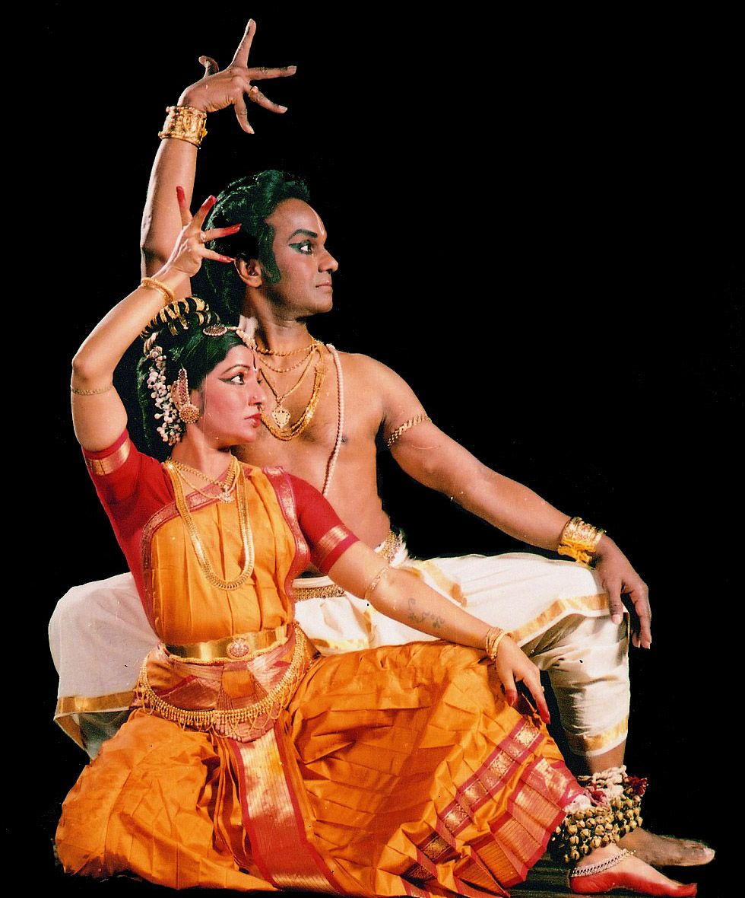
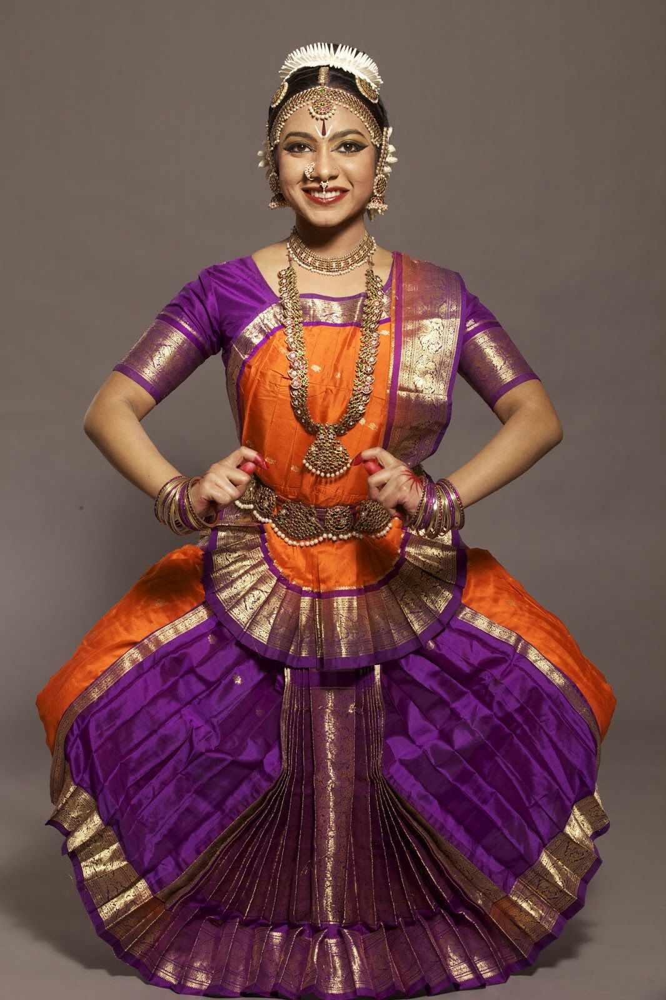
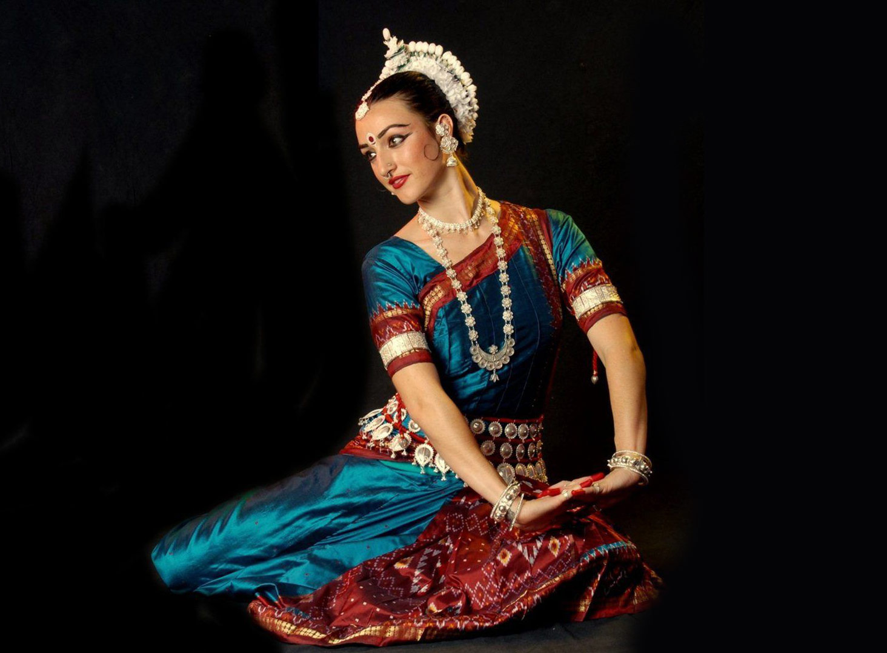
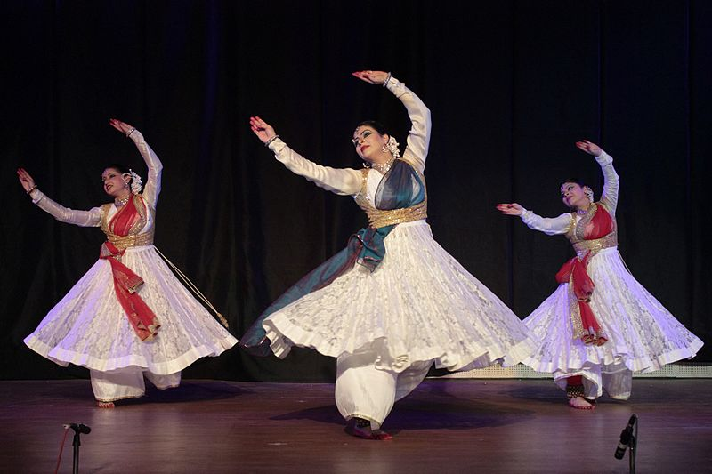

Kuchipudi
Kuchipudi is a classical dance form that originated in Andhra Pradesh, India. It is a unique blend of dance, drama, and storytelling, usually based on themes from Hindu epics like the Ramayana and Mahabharata. Known for its graceful movements, quick footwork, and expressive gestures, Kuchipudi is performed to Carnatic classical music. A special highlight of this dance is the “tarangam,” where the dancer performs on a brass plate while balancing a pot on the head. In earlier times, only men performed Kuchipudi, but today both men and women showcase it across the world. This dance form beautifully reflects devotion, culture, and artistic elegance.
Bharatanatyam
Bharatanatyam is one of the oldest classical dance forms of India, originating in Tamil Nadu. It was traditionally performed in temples as an offering to deities and is deeply connected with spirituality and devotion. The dance is known for its fixed upper body, bent legs, intricate footwork, and graceful hand gestures (mudras). Expressions (abhinaya) play a key role in conveying stories from Hindu epics like the Ramayana, Mahabharata, and Puranas. Bharatanatyam is performed to Carnatic classical music and is admired for its discipline, beauty, and storytelling power. Today, it is practiced worldwide as a symbol of Indian culture and tradition.
Odissi
Odissi is a classical dance form from Odisha, India, and is considered one of the oldest surviving dance traditions. It was originally performed in temples as a form of devotion to Lord Jagannath and other deities. Odissi is known for its graceful movements, sculpturesque poses, and tribhangi posture, which divides the body into three bends. The dance beautifully combines fluidity with rhythm and expressive storytelling (abhinaya). Performances are usually set to Odissi classical music, which has roots in ancient traditions. Today, Odissi is performed worldwide and is admired for its spiritual depth, elegance, and cultural richness.
Kathak
Kathak is a classical dance form that originated in North India and is known for its storytelling style. The word “Kathak” comes from “Katha,” meaning story, as dancers narrate tales through graceful movements and expressions. It is famous for its fast footwork, rhythmic spins (chakkars), and intricate gestures. Traditionally, Kathak depicted stories from epics like the Mahabharata and Ramayana, but later it also absorbed influences from Mughal culture. Performances are usually set to Hindustani classical music with instruments like tabla and sitar. Today, Kathak is performed worldwide and is admired for its rhythm, elegance, and storytelling beauty.
Kathakali

Kathakali is a classical dance-drama from Kerala, India, known for its colorful costumes, elaborate makeup, and dramatic expressions. It combines dance, music, and acting to depict stories mainly from the Ramayana, Mahabharata, and Puranas. Performers wear striking face paints and large headgear, making the characters easily recognizable. The dance uses strong body movements, hand gestures (mudras), and facial expressions to convey emotions and stories. Traditionally performed at night in temple courtyards, Kathakali is accompanied by percussion instruments like the chenda and maddalam. Today, it is admired worldwide as a powerful and vibrant representation of Indian culture and mythology.